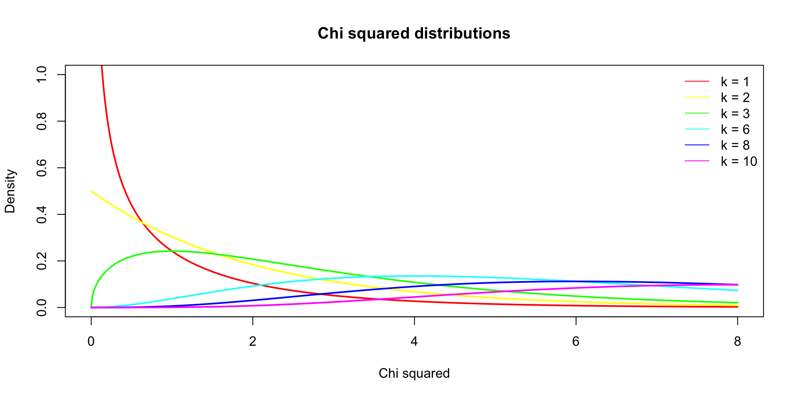
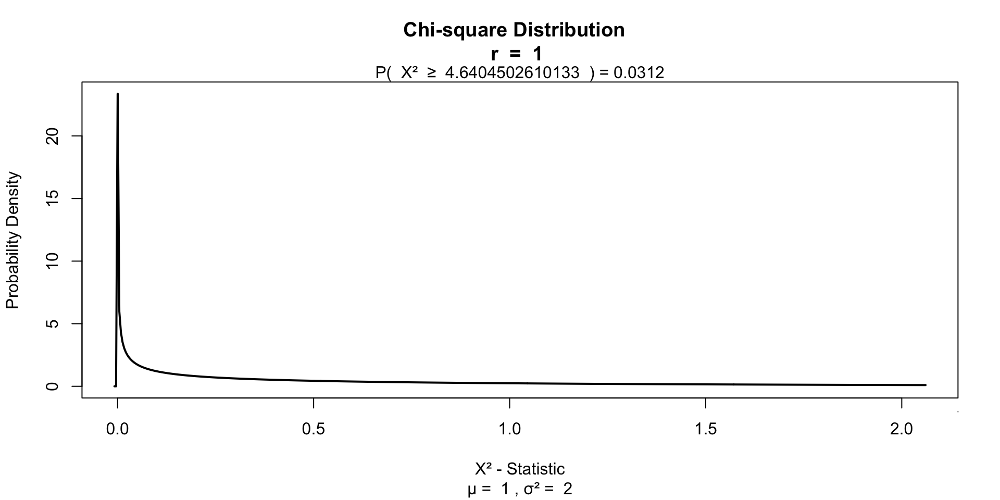

chi = seq(0,8,.01)
df = c(1,2,3,6,8,10)
col = rainbow(n = length(df))
plot( chi, dchisq(chi, df[1]), lwd = 2, col = col[1], type="l",
main = "Chi squared distributions",
ylab = "Density",
ylim = c(0,1),
xlab = "Chi squared")
lines(chi, dchisq(chi, df[2]), lwd = 2, col = col[2], type="l")
lines(chi, dchisq(chi, df[3]), lwd = 2, col = col[3], type="l")
lines(chi, dchisq(chi, df[4]), lwd = 2, col = col[4], type="l")
lines(chi, dchisq(chi, df[5]), lwd = 2, col = col[5], type="l")
lines(chi, dchisq(chi, df[6]), lwd = 2, col = col[6], type="l")
legend("topright", legend = paste("k =",df), col = col, lty = 1, bty = "n")Chi squared test
Klinkenberg
University of Amsterdam
22 oct 2022
\(\chi^2\) test
Relation between categorical variables
\(\chi^2\) test
A ’‘’chi-squared test’’‘, also written as \(\chi^2\) test, is any statistical hypothesis test wherein the sampling distribution of the test statistic is a chi-squared distribution when the null hypothesis is true. Without other qualification, ’chi-squared test’ often is used as short for Pearson’s chi-squared test.
Chi-squared tests are often constructed from a Lack-of-fit sum of squares#Sums of squares|sum of squared errors, or through the Variance Distribution of the sample variance|sample variance. Test statistics that follow a chi-squared distribution arise from an assumption of independent normally distributed data, which is valid in many cases due to the central limit theorem. A chi-squared test can be used to attempt rejection of the null hypothesis that the data are independent.
Source: wikipedia
\(\chi^2\) test statistic
\(\chi^2 = \sum \frac{(\text{observed}_{ij} - \text{model}_{ij})^2}{\text{model}_{ij}}\)
Contingency table
\(\text{observed}_{ij} = \begin{pmatrix} o_{11} & o_{12} & \cdots & o_{1j} \\ o_{21} & o_{22} & \cdots & o_{2j} \\ \vdots & \vdots & \ddots & \vdots \\ o_{i1} & o_{i2} & \cdots & o_{ij} \end{pmatrix}\)
\(\text{model}_{ij} = \begin{pmatrix} m_{11} & m_{12} & \cdots & m_{1j} \\ m_{21} & m_{22} & \cdots & m_{2j} \\ \vdots & \vdots & \ddots & \vdots \\ m_{i1} & m_{i2} & \cdots & m_{ij} \end{pmatrix}\)
\(\chi^2\) distribution
The \(\chi^2\) distribution describes the test statistic under the assumption of \(H_0\), given the degrees of freedom.
\(df = (r - 1) (c - 1)\) where \(r\) is the number of rows and \(c\) the amount of columns.
\(\chi^2\) distribution

Example
Experiment
http://goo.gl/faj76B
Data
Calculating \(\chi^2\)
sekse
fluiten Man Vrouw
Ja 17 26
Nee 1 12\(\text{observed}_{ij} = \begin{pmatrix} 17 & 26 \\ 1 & 12 \\ \end{pmatrix}\)
Calculating the model
\(\text{model}_{ij} = E_{ij} = \frac{\text{row total}_i \times \text{column total}_j}{n }\)
Calculating the model
\(\text{model}_{ij} = E_{ij} = \frac{\text{row total}_i \times \text{column total}_j}{n }\)
[,1] [,2]
[1,] 13.821429 29.178571
[2,] 4.178571 8.821429\(\text{model}_{ij} = \begin{pmatrix} 13.8214286 & 29.1785714 \\ 4.1785714 & 8.8214286 \\ \end{pmatrix}\)
observed - model
Calculating \(\chi^2\)
\(\chi^2 = \sum \frac{(\text{observed}_{ij} - \text{model}_{ij})^2}{\text{model}_{ij}}\)
Testing for significance
\(df = (r - 1) (c - 1)\)
Testing for significance

Fisher’s exact test
Calculates axact \(\chi^2\) for small samples.
- Cell size < 5
Yates’s correction
For 2 x 2 contingency tables.
\(\chi^2 = \sum \frac{ ( | \text{observed}_{ij} - \text{model}_{ij} | - .5)^2}{\text{model}_{ij}}\)
Yates’s correction
Likelihood ratio
Alternatieve to Pearson’s \(\chi^2\).
\(L \chi^2 = 2 \sum \text{observed}_{ij} ln \left( \frac{\text{observed}_{ij}}{\text{model}_{ij}} \right)\)
Likelihood ratio
Standardized residuals
\(\text{standardized residuals} = \frac{ \text{observed}_{ij} - \text{model}_{ij} }{ \sqrt{ \text{model}_{ij} } }\)
Effect size
Odds ratio based on the observed values
\(\begin{pmatrix} a & b \\ c & d \\ \end{pmatrix}\)
\(OR = \frac{a \times d}{b \times c} = \frac{17 \times 12}{26 \times 1} = 7.8461538\)
Odds
sekse
fluiten Man Vrouw
Ja 17 26
Nee 1 12The man and women ratio of people that can whisle and the ratio of those who can’t whistle
- Can wistle \(\text{Odds}_{mf} = \frac{ 17 }{ 26 }\) = 0.6538462
- Can’t wistle \(\text{Odds}_{mf} = \frac{ 1 }{ 12 }\) = 0.0833333
Odds ratio
Is the ratio of these odds.
\(OR = \frac{\text{wistle}}{\text{can't wistle}} = \frac{0.6538462}{0.0833333} = 7.8461538\)
End
Contact


Scientific & Statistical Reasoning